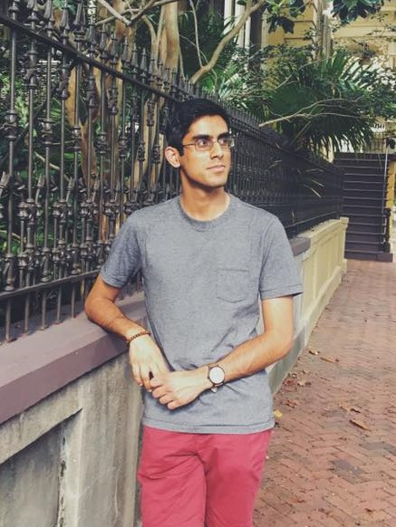
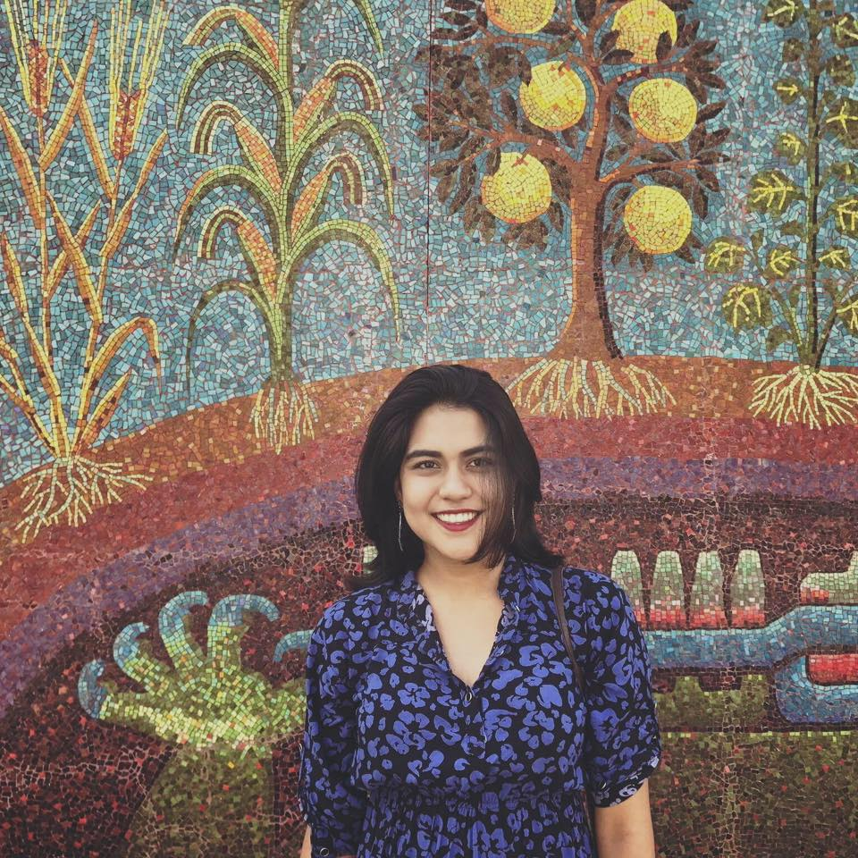
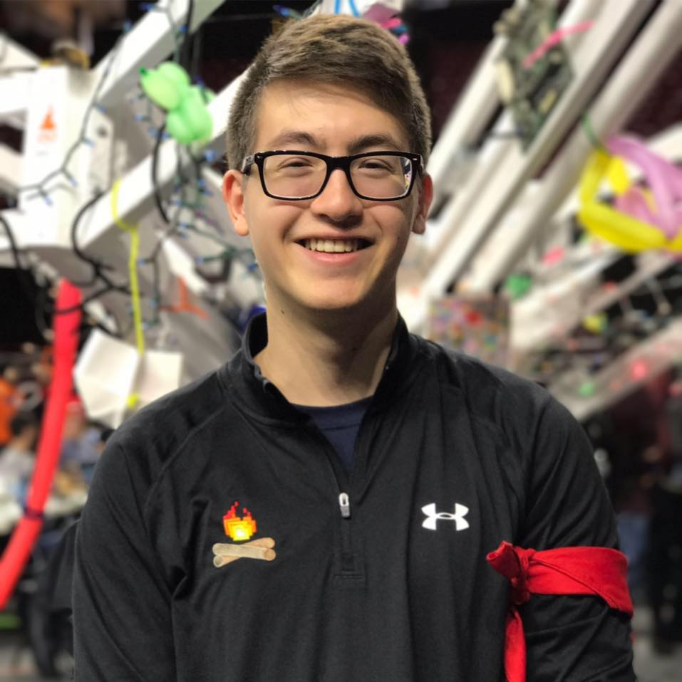
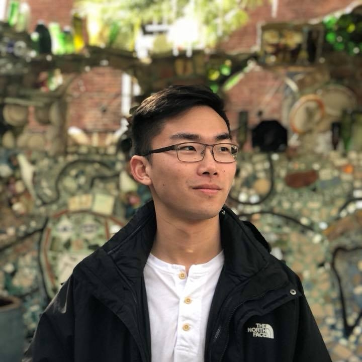
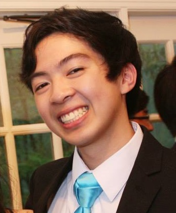
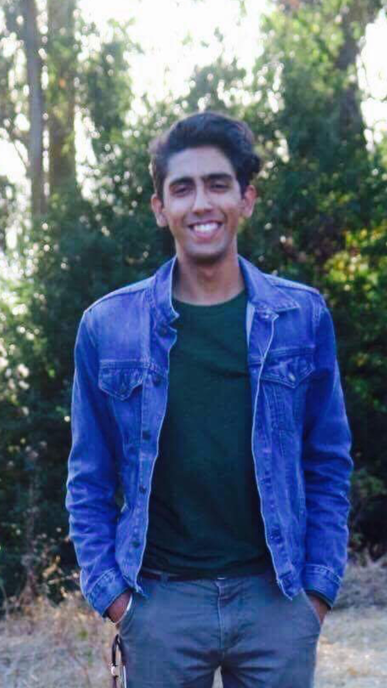

Researching cost-efficient ways to create Electrowetting-based Displays
VOLTAGE (Visual Orientation of Liquids Through Applications and Generation of Electrofluidics) is a four-year, undergraduate, research team facilitated by the Gemstone Honors Program at the University of Maryland, College Park. We hope to explore cost efficient ways of producing display technology using the phenomenon of electrowetting.
Trinish Chatterjee
Trinish Chatterjee is an Electrical Engineering major with a minor in Asian-American Studies. On campus, he has been a VP on the Gemstone Students Council and a CONNECT Mentor. He is also involved with hackathon organizing, TA-ing for electrical engineering courses, and South-Asian community advocacy. In his free time, he enjoys reading, languages, and writing.
Nazifa Chowdhury
Nazifa is working towards a double degree in Computer Science and Economics and has a penchant for technology. She is involved with Technica, Bitcamp, and Association of Women in Computing.
Christopher Hallock
Christopher Hallock is a Fire Protection Engineering major with a minor in Project Management and is pursuing a Master of Engineering degree at UMD. Outside of school he spends most of his time as a volunteer firefighter at the Rockville Volunteer Fire Department in his hometown of Rockville, Maryland.
Jason Ittner
Jason is an electrical engineering major with a minor in actuarial mathematics. In his free time he enjoys reading, gaming, and exercise. He is also a Gems Camp leader as well as a Bitcamp organizer.
Alex Jiao
Isaac Lee
David Nguyen
David is a Mechanical Engineering major and is interested in the study of engineering and how it affects societies. He enjoys going to the gym with Jason, eating dinner with friends, playing video games, and indulging in Japanese animation. He is currently serving as a senator in the University of Maryland Senate, and also works as a mentor for the Gemstone CONNECT program.
Karam Singh
Karam Singh is an electrical engineering major enrolled in UMD. He also hopes to teach younger students and is currently a TA. He also enjoys pursuing personal projects to improve his skills. In the future Karam hopes to use his Electrical Engineering major to better the world by teaching and serving those in need.
Alexander Weatherford
Zander is a Computer Engineering major who loves Jesus and his wife, Kaylee. He is a member of Intervarsity Christian Fellowship, and a singer/songwriter for the band Speed the Coming.
Electronic paper is a technology that has been gaining popularity in the last decade. It involves devices that mimic the readability and clarity of a piece of printed paper using various types of “e-ink”. Through various mechanisms, devices such as Kindles and Nook readers color their individual pixels either dark or light, which results in a device that provides a paper-like reading experience unparalleled to that of LED devices. Currently, electronic paper devices hold huge potential as an industry that can replace the paper industry or reduce our reliance of paper materials, either of which would reduce paper waste. Paper waste accounts for around 40% of the US’ waste, and is thus a problem that is worthy of investigation through less expensive display technologies. Many electrofluidics phenomena are being harnessed for electronic paper, and one such phenomena that has just recently entered into the radar of science and industry is electrowetting. This involves using charge to move small amounts of colored fluid by running voltage through them on a nanoscopic scale. While many devices have been prototyped or created commercially using electrowetting, there is still a large amount of room to improve on the design and production of current electrowetting display devices. Since certain designs require an intensive industrial process, the widespread use of e-paper can be encouraged by experimenting with more innovative designs that are easier to produce and more cost-effective. These new designs could include features such as pixel-less or open-structured pixels, etched-in or 3D printed pixels, and new fluid control mechanisms. Cheaper and more efficient production of e-paper will allow for mass production, which will make e-paper both more affordable as well as more accessible to the world.